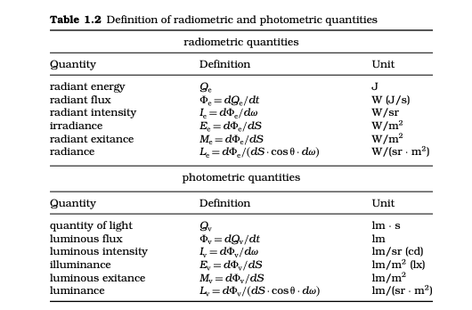

Light, Vision and Photometry
LIGHT
MECHANISM OF THE HUMAN EYE
ADAPTATION AND RESPONSIVITY OF THE HUMAN EYE
SPECTRAL RESPONSIVITY AND THE STANDARD PHOTOMETRIC OBSERVER
DEFINITION OF PHOTOMETRIC QUANTITIES
PHOTOMETRIC UNITS
CALCULATION AND MEASUREMENT OF PHOTOMETRIC QUANTITIES
PHOTOMETRIC UNITS
In the SI (the International System of units),
luminous intensity
is a base unit. The SI evolved from the MKSA unit system. Three units, the kelvin 